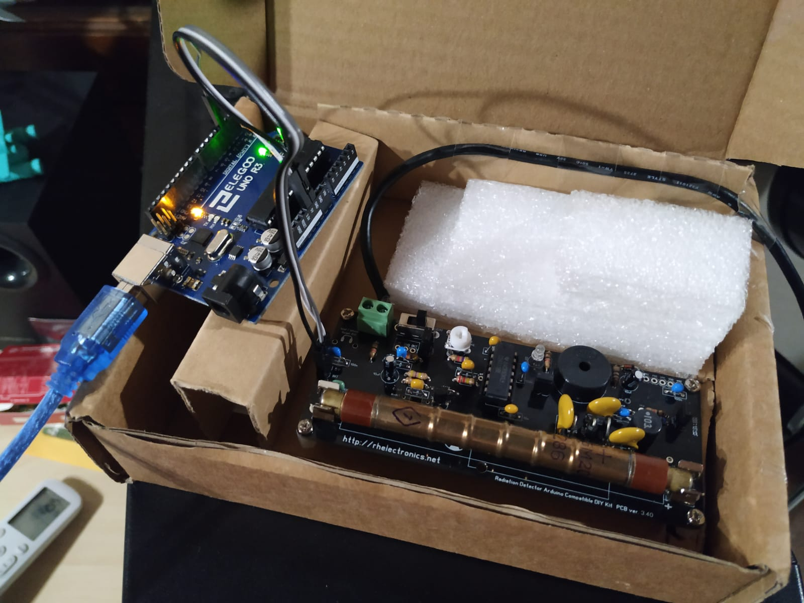
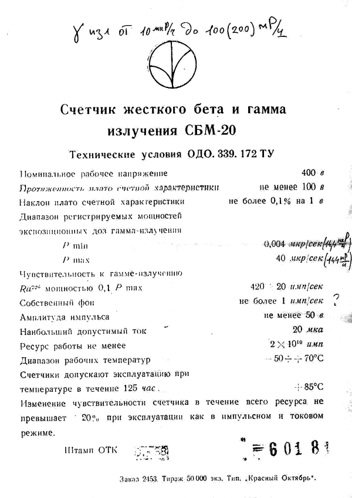
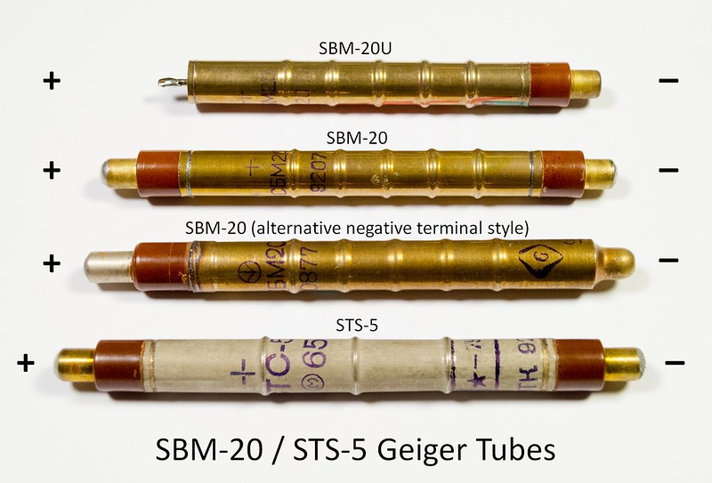
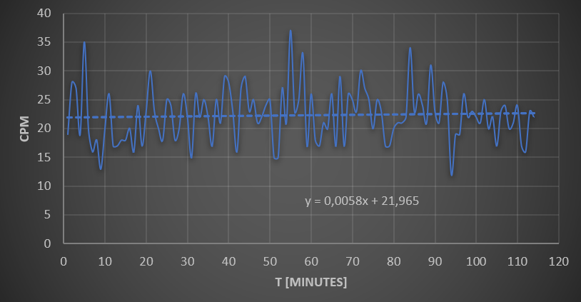

Arduino Geiger-Müller Counter:
I've always wanted to have my very own Geiger-Müller counter to test radioactive samples, but the price of profesional grade equipment is too high to justify the cost for a "toy". Instead, I decided to build it myself using readily available consumer parts. The device only employs four parts: the Geiger-Müller tube driver circuit, the tube itself, the Arduino microcontroller, and a portable 5V USB battery.
Driver Circuit:
Geiger-Müller tubes work by applying a high voltage (between 300-600 Volts usually) between to electrodes on opposite ends of a sealed tube filled with an inert gas. When radiation collides with the tube, it briefly ionises the gas, creating a pulse-current between the electrodes.
The driver circuit applies this high voltage and senses these pulses, converting them into signals. The circuit that I used is a readily available kit manufactured by RH Electronics. It can accomodate various types of GM tubes, and is able to output pulses conditioned for microcontrollers like an Arduino. It also features a built in buzzer attached to the output.
Geiger-Müller Tube
The tube employed is an SBM-20, produced in mass in the USSR during the Cold War. They are the quintesencial DIY GM counter tube, and are very robust and reliable, with good beta and gamma detection; Useless for alpha detection however. They are readily available online and are not expensive.

The tests I've carried out have shown an average background of 23 CPM, which seems to correlate with the measurements shared by other users online. I haven't had the chance to test it with a highly source up to this date. The only radioactive sample that I've tried with it is a thoriated tungsten filament used for TIG welding. It has a very low Thorium content of only 2%, and it itself decays via alpha emission, so what the GM tube records is the beta emissions from its decay products, mainly Radon.
Arduino Assembly
The Arduino Code employed so far is really simple. All it does is record the pulses by using interrupts. These pulses are counted for periods of one minute and then written onto a csv file that allows it to be post processed.

Future Plans
The idea is to swap the Arduino for an Arduino Nano with data logging or a WEMOS D1 with WiFi and 3D print a case with a built in screen to make the device completely autonomous.